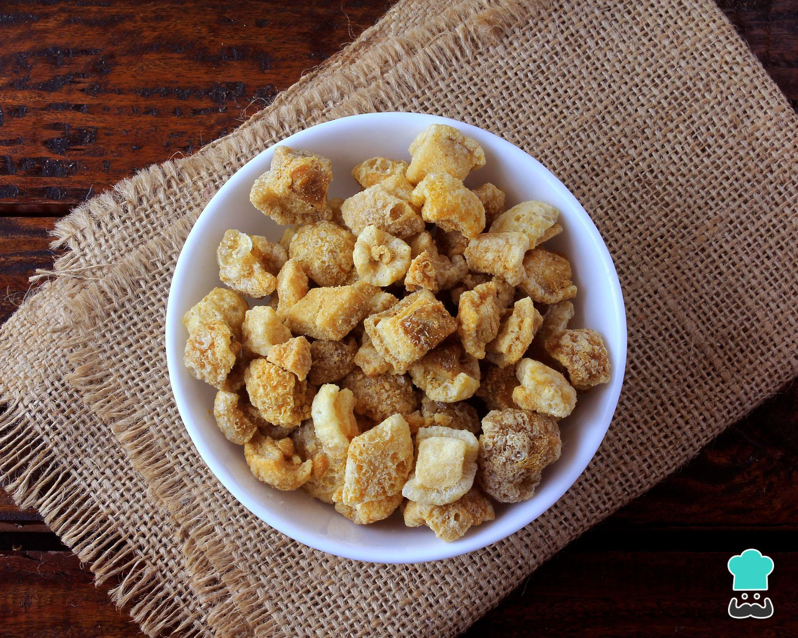

Torresmo

INGREDIENTES
• 2 kg de toucinho
• 2 colheres (sopa) de banha
• Sal a gosto
• 2 kg de toucinho
• 2 colheres (sopa) de banha
• Sal a gosto
• 2 kg de toucinho
• 2 colheres (sopa) de banha
• Sal a gosto
• 2 kg de toucinho
• 2 colheres (sopa) de banha
• Sal a gosto
• 2 kg de toucinho
• 2 colheres (sopa) de banha
• Sal a gosto
PORÇÕES
Serve 07 pessoas
TEMPO DE PREPARO
30 minutos
PASSO A PASSO
1. Primeiro, retire toda a pele do toucinho.
2. Em seguida, corte em pequenos cubos e polvilhe com um pouco de sal refinado. Reserve.
3. Coloque, em uma panela, a banha e leve ao fogo brando. Cuide para que não fique muito quente.
4. Acrescente o toucinho cortado e frite lentamente.
5. Quando corar, tire com a escumadeira e deixe escorrer em papel absorvente.
6. Servir ainda quente.